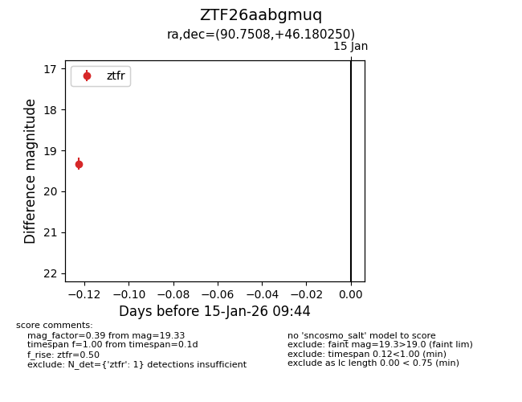
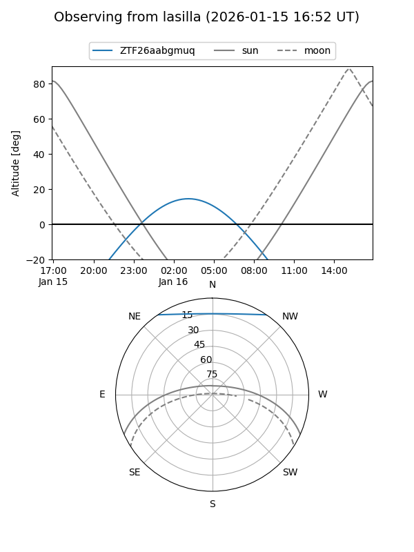
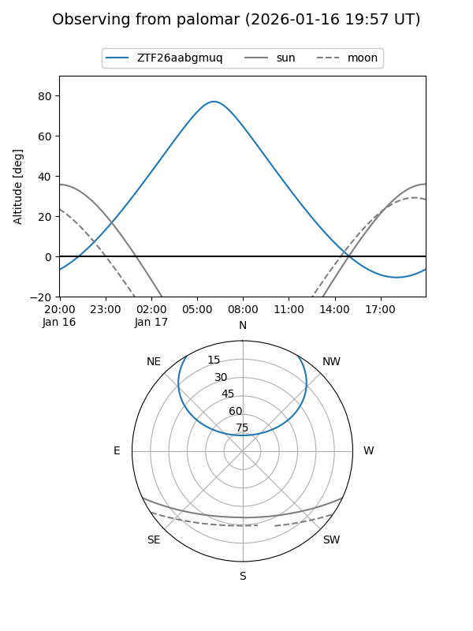

ZTF26aabgmuq
Target ZTF26aabgmuq at 2026-01-15 09:45
Aliases and brokers:
FINK: link
Lasair: link
ALeRCE: link
alt names
ZTF26aabgmuq (ztf,fink_ztf)
Coordinates:
equatorial (ra, dec) = 90.7508,+46.18025
equatorial (HMS+DMS) = 06:03:00.19,+46:10:48.90
galactic (l, b) = (166.6341,+11.52172)
Flags:
Photometry:
last ztfr=19.33
1 ztfr detections
Lightcurve

Visibility


Additional plots